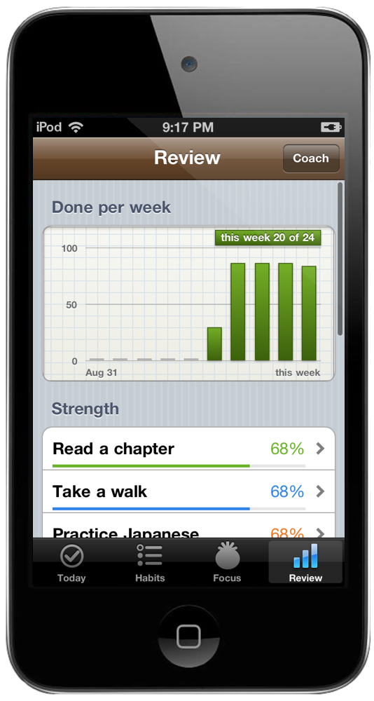
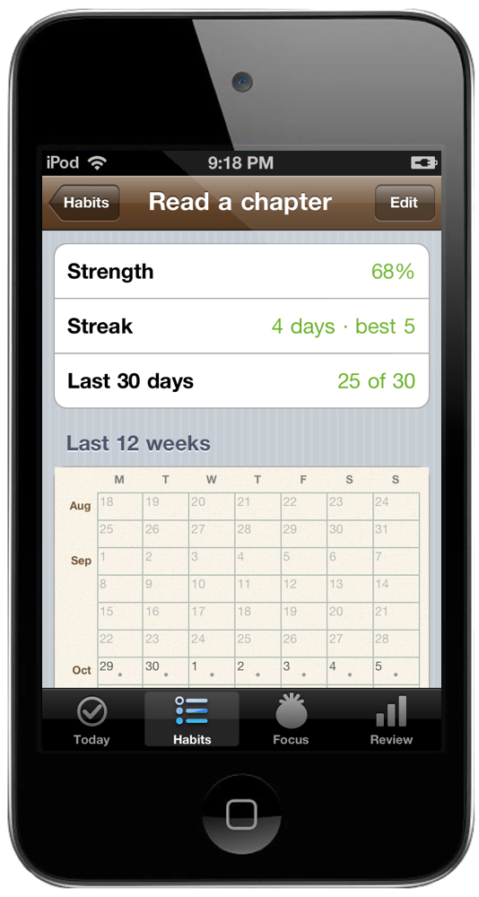
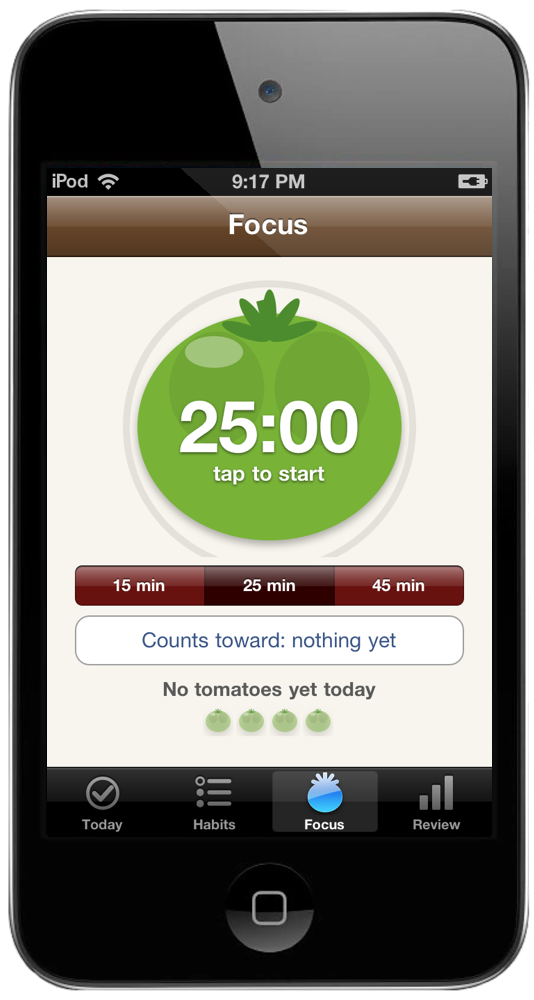
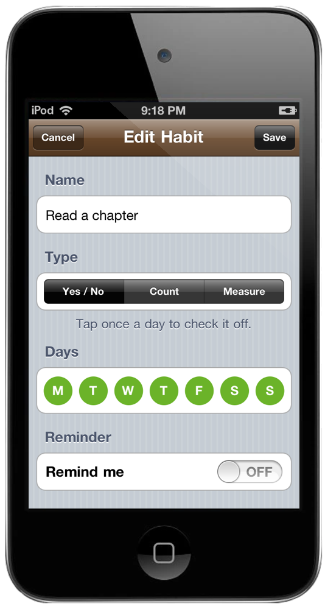

Small things. Every day.
Lined paper. Familiar controls. Check them off and watch them add up.


Say the goal. Get the habits.
Type what you want, like "run a 10k in spring" or "less phone at night". Claude uses your goal, time budget, barriers and recent progress to suggest small habits with targets, days and reminder times. Review the plan and keep the habits you want. Existing habits stay put.

Don't break the chain.
A wall calendar with a red X on every day you did it, twelve weeks at a glance. Every habit has a strength score that forgives a bad day instead of resetting you to zero, plus your streak, your best, and which weekdays you actually do the thing.
Your week, in a chart.
How much you did each week and where every habit stands. Ask Claude what is working and what to try in the next seven days. The Coach shows the progress summary before you send it. Continue in the Claude app with an editable draft.

Twenty-five minutes. One tomato.
Tap it and it ripens from green to red as you work. Rings when it's done, even with the iPod asleep, then runs the break. Each finished tomato can count toward a habit, like twenty pages or an hour of deep work. The Review tab keeps a two-week chart of them and your focused hours.

Yes or no. Or count. Or measure.
Eight glasses, twenty pages, or just did it. Pick the days, set a reminder, and it rings on the iPod with no Wi-Fi needed.